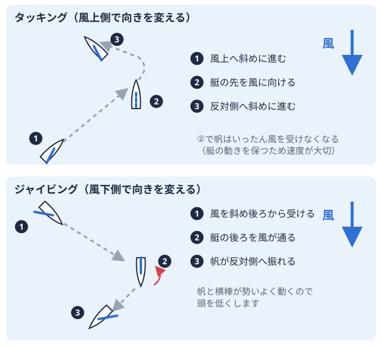

怪我・体調 2026-09-11
ヨット部の車酔い・船酔い対策｜レースと遠征移動で分けて考える
大学からヨット部に入った部員の中には、乗艇するたびに気持ち悪くなってしまい、練習やレースに集中できないと悩んでいる人が少なくありません。「ヨット 車酔い 対策」で検索しても、出てくるのはフェリーや観光バスの一般的な乗り物酔い対策ばかりで、タッキング風が吹いてくる方向へ進むとき、艇の先を風に向けて回し、帆を張る側を左右反対にする方向転換。 
結論：対策は「乗艇前」「乗艇中・レース中」「遠征移動中」の3段階に分けて考える
大学ヨット部で酔いに悩む場面は大きく3つに分けられます。ひとつは練習・レースで艇に乗る前の準備、ふたつめは実際に乗艇しレースをしている最中、みっつめは遠征先まで移動するバスや車の中です。それぞれで揺れの性質や対策できることが異なるため、フェリーやクルーズ船向けの一般的な酔い止め情報をそのまま当てはめるのではなく、場面ごとに対策を考えることが酔いを軽くする近道になります。
なぜヨットのレースは酔いやすいのか
一般的な船酔い対策の記事では、揺れの少ない位置を選ぶ・遠くの景色を見る・換気するといった対策が紹介されています（TSURINEWS、VELTRA Cruise）。これらはフェリーやクルーズ船のように、比較的一定方向にゆっくり揺れる乗り物を前提にした対策です。
一方、大学ヨット部が乗る470級全長4.7mの2人乗り競技用ヨット。大きな追い風用の帆とワイヤーを使う。 やスナイプ級2人乗りの競技用ヨット。追い風用の大きな帆を持たず、ワイヤーも使わない。などの小型ディンギーは、風上自分の艇から見て、風が吹いてくる側。風上へ進むにはジグザグに走る必要がある。
やスナイプ級2人乗りの競技用ヨット。追い風用の大きな帆を持たず、ワイヤーも使わない。などの小型ディンギーは、風上自分の艇から見て、風が吹いてくる側。風上へ進むにはジグザグに走る必要がある。 ・風下自分の艇から見て、風が吹いていく側。風上の反対側。追い風で進む向き。へのコース取りの中でタッキングやジャイビングを何度も繰り返し、そのたびに艇の傾き（ヒール風を受けた艇が横に傾くこと。傾きすぎると転覆しやすいため、体重などで抑える。）や進行方向が短い間隔で変わります。揺れの向きと大きさが一定でないぶん、平衡感覚が乱れやすい場面があると考えられます。
・風下自分の艇から見て、風が吹いていく側。風上の反対側。追い風で進む向き。へのコース取りの中でタッキングやジャイビングを何度も繰り返し、そのたびに艇の傾き（ヒール風を受けた艇が横に傾くこと。傾きすぎると転覆しやすいため、体重などで抑える。）や進行方向が短い間隔で変わります。揺れの向きと大きさが一定でないぶん、平衡感覚が乱れやすい場面があると考えられます。
スキッパーよりクルーが酔いやすい場面がある
ポジションによっても酔いやすさは変わる可能性があります。スキッパー2人乗りの艇で、後ろ側に座って舵と大きな帆を操作し、進む方向を決める人。 は基本的に進行方向を見ながら舵を取りますが、クルー2人乗りの艇で、前側に座って小さな帆などを操作し、体重を使って艇の傾きを抑える人。はジブマストより前に張る小さめの帆。大きな帆と組み合わせて風を受ける。
は基本的に進行方向を見ながら舵を取りますが、クルー2人乗りの艇で、前側に座って小さな帆などを操作し、体重を使って艇の傾きを抑える人。はジブマストより前に張る小さめの帆。大きな帆と組み合わせて風を受ける。 のトリムロープなどを使って、帆の張り具合や開き具合を風に合わせて調整すること。作業のために艇の前方や横向きの姿勢を取ることが多く、視覚で捉える景色と体が感じる揺れの向きがずれやすい場面があります。新入部員がまずクルーとして経験を積むことが多い部活動もあるため、入部直後にクルーとして酔いに悩みやすいと感じる部員がいても不思議ではありません。ただし体質による個人差も大きいため、「クルーは必ず酔う」といった決めつけはできない点には注意が必要です。
のトリムロープなどを使って、帆の張り具合や開き具合を風に合わせて調整すること。作業のために艇の前方や横向きの姿勢を取ることが多く、視覚で捉える景色と体が感じる揺れの向きがずれやすい場面があります。新入部員がまずクルーとして経験を積むことが多い部活動もあるため、入部直後にクルーとして酔いに悩みやすいと感じる部員がいても不思議ではありません。ただし体質による個人差も大きいため、「クルーは必ず酔う」といった決めつけはできない点には注意が必要です。
遠征のバス移動での車酔いとの違いと共通点
遠征のたびにバスや車で長距離を移動する大学ヨット部では、乗艇前の移動ですでに車酔いしてしまい、その状態のまま艇に乗ることで症状が長引くケースも考えられます。バスの車酔いと船酔いは平衡感覚が乱れるという点では共通していますが、バスは進行方向が予測しやすいのに対し、レース中のヨットは風向き・波・他艇との位置関係によって動きが変わるため、対策も分けて考える必要があります。
乗艇前にできる対策
睡眠と食事の基本
一般的な船酔い対策の記事でも共通して挙げられているのが、前日の睡眠不足を避けることと、食事の摂り方です。空腹のまま乗艇すると胃が刺激に弱くなる一方、直前の食べ過ぎも消化器官への負担になるとされています（TSURINEWS）。練習やレース当日は、消化のよいものを軽めに済ませておくという基本を押さえておくとよいでしょう。
酔い止め薬を選ぶときの注意点
酔い止め薬は乗り物酔い対策の定番ですが、大学ヨット部の部員が選ぶ際にはひとつ注意点があります。市販の酔い止め薬の中には第一世代の抗ヒスタミン成分を含むものがあり、眠気が強く出やすいとされています（EPARKくすりの窓口）。観光や移動が目的であれば眠気は我慢できても、レース中に判断力や反応の速さが求められる競技者にとっては、眠気の強い薬を選ぶとパフォーマンスに影響が出る可能性があります。薬を選ぶ際は成分表示を確認し、眠気の出方に不安がある場合は薬剤師に相談したうえで、練習日など本番以外のタイミングで一度試しておくと安心です。
乗艇中・レース中にできる対策
視線と姿勢の工夫
一般的な船酔い対策でよく紹介されているのが、遠くの景色や水平線を見ることで視覚と体の感覚のずれを補正するという方法です（VELTRA Cruise）。ヨットのレース中も、ジブトリムなど手元の作業に集中し続けるのではなく、要所要所で顔を上げて風上や遠くのマークを見る時間を作ることで、同様の効果が期待できると考えられます。
タッキング・ジャイビングが多い日の練習での工夫
強風でタッキング・ジャイビングの回数が多くなる日や、うねりの大きい水域全国の大学ヨット部を地域ごとに分けた区分。北海道から九州まで全国に9つある。での練習は、酔いやすさが増す場面のひとつです。こうした日は、練習の合間に艇を止めて呼吸を整える時間を作ったり、体調が悪化する前に早めにコーチや上級生に伝えたりすることも対策のひとつになります。無理をして練習を続けることが上達につながるとは限らないため、体調が悪いときは早めに周囲へ共有できる雰囲気を部としてつくっておくことも大切です。
遠征のバス・車移動での車酔い対策
遠征のバスや車移動における車酔い対策としては、進行方向を向いた席に座る、揺れの少ない前方や中央付近の席を選ぶ、窓を少し開けて換気する、スマートフォンなど手元を見続ける作業を控えるといった方法が紹介されています（サカボン）。遠征当日は移動中の車酔いに加えて乗艇後の船酔いも重なりやすいため、移動中の対策を徹底しておくことで、乗艇時のコンディションを整えやすくなると考えられます。
新入部員が慣れていく期間とチームのサポート
大学から未経験でヨット部に入った部員の中には、入部当初は酔いに悩んでいても、乗艇の経験を重ねる中で症状が和らいでいったと感じる人もいます。ただし慣れるまでの期間には個人差があり、必ず短期間で克服できるとは限りません。焦らず自分のペースで経験を積むこと、そして部としても新入部員の体調を気にかけ、無理に乗艇を続けさせない雰囲気をつくることが、長く競技を続けてもらう上で大切な視点になります。
まとめ
ヨット部の車酔い・船酔い対策は、フェリーや観光バス向けの一般的な情報をそのまま当てはめるのではなく、「乗艇前の準備」「タッキング・ジャイビングを繰り返すレース中の工夫」「遠征のバス・車移動」という3つの場面に分けて考えることで、より部活動の実態に合った対策につながります。酔い止め薬を使う場合は、レース中の眠気にも注意しながら自分に合った薬を見つけていくとよいでしょう。各大学のヨット部がどの水域を拠点に活動しているかは、ヨットマニアの水域別ディレクトリ（関東）や、早稲田大学ヨット部のページのような大学ページからも確認できますので、遠征先の水域の特徴を事前に調べる際の参考にしてみてください。
出典
PR
この部活・競技を応援したい方へ
体育会学生を支援するプラットフォーム「ツナカレ」で、応援できる部活を探せます。
PR
取材してほしい部活を募集中
あなたの部活・大会を取材してほしい方はこちらからご依頼ください。
オフシーズン・引退後に、長期インターンという選択
部活で培った力を実務で試す。16タイプ診断（30秒）で合う企業がわかります。